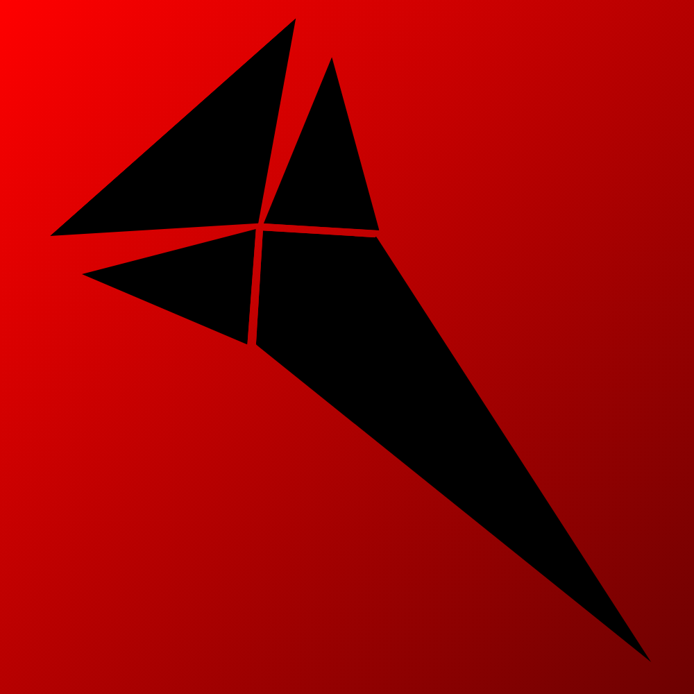

Portfolio
Projects
Everything on the home page lives here in fuller form: the public apps, the game projects, the account platform, and the systems work that connects the wider Continental ecosystem.
Web Apps
Public-facing projects
The main Continental lineup mixes focused utility tools, archival platforms, and game experiences. Each one has its own identity, but they all sit under the same broader studio umbrella.

Route Tracking
StepCast
StepCast is a podcast-first walk tracker built around the idea that routes, listening sessions, and movement history should feel like part of one experience instead of separate logs. It tracks walks, stores route details, and keeps the interface lightweight enough to use on the move.
The project is aimed at turning ordinary walking data into something more personal and useful for people who listen while they move, with a cleaner presentation than a general-purpose fitness app.
Screenshot placeholder
Add a StepCast homepage, route view, or walk history capture here later.

Audio Drama Archive
The Echo Archives
The Echo Archives is a curated catalog for audio dramas, built to make discovery easier through tagged entries, filters, dedicated show pages, and a browsing structure that feels more deliberate than a plain list of recommendations.
It is part archive and part personal curation layer, giving shows room to breathe while still supporting quick scanning, category-based browsing, and future expansion as the collection grows.
Screenshot placeholder
Add a library grid, series page, or tag-filtering view here later.

Puzzle Game
Minesweeper
Minesweeper is a browser rebuild of the classic game with a cleaner presentation, modern state handling, difficulty presets, custom board support, timer tracking, and a local leaderboard flow that makes it feel more polished than a throwaway remake.
The goal is not just to replicate the original rules, but to make the game feel fast, readable, and worth replaying on modern screens without losing the core logic that makes Minesweeper satisfying.
Screenshot placeholder
Add a live board, leaderboard, or custom-game setup capture here later.

Deckbuilder + Tabletop
Grimoire
Grimoire is a Magic: The Gathering deckbuilder and online tabletop project with live Scryfall search, filters, deck analysis, import and export tools, saved deck states, and a synchronized multiplayer play mode built on a separate WebSocket backend.
It sits between utility and game platform: part deck construction tool, part shared play space, and part long-term ecosystem piece that can connect with Continental account and service infrastructure over time.
Screenshot placeholder
Add a deckbuilder workspace, card search panel, or tabletop room view here later.
Systems
Services and infrastructure projects
Not everything under Continental is a public website. Some of the work is operational, community-facing, or infrastructure-heavy, but it still belongs in the same project lineup.

Discord Moderation + Utility
Vanguard
Vanguard is a Discord bot platform built for moderation, reminders, voting workflows, AI-assisted chat, incident guardrails, and broader community operations. It supports both server installs and user installs, and includes a branded control center for live per-server configuration.
It works less like a single-purpose bot and more like a growing operations layer for community management, with hooks into Continental ID for identity-aware features and licensing controls for hosted deployments.
Screenshot placeholder
Add the control center dashboard, command UI, or website landing page here later.
Identity
Shared account and platform layer
The wider ecosystem needs more than standalone websites. Continental ID is the connective layer designed to tie those projects together with shared access, profile management, and service-to-service integration.

Account Platform
Dashboard / Continental ID
Continental ID is a full-stack account dashboard with hardened authentication and session handling, profile and security controls, linked-provider support, account activity tracking, export tools, and API-driven settings management. It is built as a real platform layer, not just a login form.
The dashboard also creates a base for service integration across projects like Grimoire and Vanguard, including shared identity resolution, session management, and room for future cross-project features under one account system.
Screenshot placeholder
Add the account dashboard, security page, or profile settings view here later.